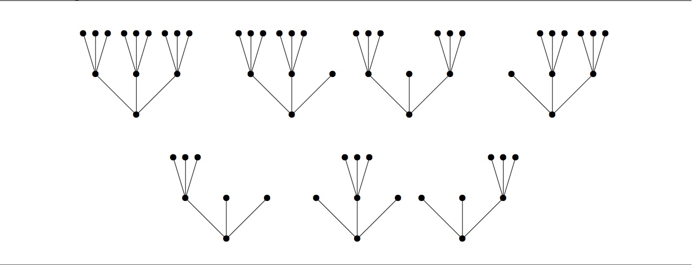

A full $k$-ary tree is a tree with a single root node, such that every node is either a leaf or has exactly $k$ ordered children. The height of a $k$-ary tree is the number of edges in the longest path from the root to a leaf.
For instance, there is one full 3-ary tree of height 0, one full 3-ary tree of height 1, and seven full 3-ary trees of height 2. These seven are shown below.

For integers $n$ and $k$ with $n\ge 0$ and $k \ge 2$, define $t_k(n)$ to be the number of full $k$-ary trees of height $n$ or less.
Thus, $t_3(0) = 1$, $t_3(1) = 2$, and $t_3(2) = 9$. Also, $t_2(0) = 1$, $t_2(1) = 2$, and $t_2(2) = 5$.
Define $S_k$ to be the set of positive integers $m$ such that $m$ divides $t_k(n)$ for some integer $n\ge 0$. For instance, the above values show that 1, 2, and 5 are in $S_2$ and 1, 2, 3, and 9 are in $S_3$.
Let $S = \bigcap_p S_p$ where the intersection is taken over all primes $p$. Finally, define $R(N)$ to be the sum of all elements of $S$ not exceeding $N$. You are given that $R(20) = 18$ and $R(1000) = 2089$.
Find $R(10^7)$.
solve(max_limit=20) → ?solve(max_limit=10000000) → ?solve(max_limit=1000) → ?